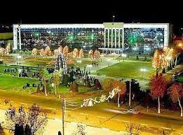
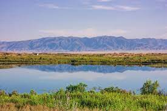

O'zbekiston |
|||||
| O'zbekiston |
O'zbekiston
|
||||
| Toshkent | |||||
| Buxoro | |||||
| Samarqand | |||||
| Navoiy | |||||
| Farg'ona | |||||
| O'zbrkiston | |||||
| Xorazm | |||||
| Namangan | |||||
| Qashqardaryo | |||||
| Sirdaryo | |||||
| Surxandaryo | |||||
| Andijon | |||||
Jizzax viloyati Vikipediya, ochiq ensiklopediya Navigatsiya qismiga oʻtishQidirish qismiga oʻtish Jizzax viloyati viloyat Maʼmuriy markazi Jizzax Yirik shaharlari Jizzax, Gagarin, Paxtakor,Zarbdor, Zomin Asos solingan sanasi 1973-yil Hokim Ergash Saliyev Rasmiy tili o'zbek Aholi 1 400 000 (2021) (11-oʻrin) Millatlar tarkibi ko'p millatli Dinlar tarkibi musulmonlar Maydoni 21200 km² (40% tog'li 25 cho'l qolganiekin maydonlari %, 21200-oʻrin) Jizzax viloyati xaritada Jizzax viloyati, Xarita Soat mintaqasi UTC+5 Kod ISO 3166-2 UZ-JI Telefon kodi +99872 Pochta indeksi 130100 Rasmiy sayti jizzax.uz Koordinatalari: 40°25′0″N 67°40′0″E G O Jizzax viloyati — Oʻzbekiston Respublikasi tarkibidagi viloyat. Respublikaning markaziy qismida. 1973-yil 28-dekabrda tashkil etilgan. Shim.-sharqda Qozogʻiston Respublikasi va Sirdaryo viloyati, janubi-gʻarbda Samarqand, Navoiy viloyatlari, janubisharqda Tojikiston Respublikasi bilan chegaradosh. Maydon 21,2 ming km2. Aholisi 1 382,10 ming kishi (2020). Jizzax viloyatida 12 qishloq tumani (Arnasoy, Baxmal, Doʻstlik, Sharof Rashidov, Zarbdor, Zafarobod, Zomin, Mirzachoʻl, Paxtakor, Yangiobod, Forish, Gʻallaorol), 9 shahar (Gagarin, Dashtobod, Doʻstlik, Jizzax, Marjonbuloq, Paxtakor, Gʻallaorol,Zarbdor,Zomin), 8 shaharcha (Boʻston, Zafarobod, Oʻsmat, Uchquloch, Bog'don,Pishag'ar,Qoʻytosh,Sharq yulduzi), 95 qishloq fuqarolari yigʻini bor (2001). Markazi — Jizzax shahri (Jizzax viloyati tumanlari haqida tegishli maqolalarga q.) Mundarija 1 Tabiati 2 Xoʻjaligi 3 Hududiy boʻlinishi 4 Sanoati 5 Qishloq xoʻjaligi 6 Transporti 7 Madaniy-maorif, sogʻliqni saqlash va sporti 8 Adabiyoti 9 Matbuoti, radio va televideniyesi 10 Meʼmoriy va tarixiy yodgorliklari 11 Jizzax viloyatidagi oliy taʼlim muassasalari 12 Havolalar 13 Manbalar 14 Havolalar Tabiati Relyefi togʻlik, qir va tekisliklardan iborat. Janubiy qismini Turkiston tizmasining tarmoqlari (Molguzar tizmasi), gʻarbini Nurota tizmasining sharqiy qismi egallagan. Shim., shimoli-gʻarbi va sharqiy qismi (Mirzachoʻl va Qizilqum choʻlining janubi-sharqi) tekislikdan iborat. Iqlimi keskin kontinental. Yanvarning oʻrtacha tempaturasi -G dan —4° gacha, iyulniki 28°. Togʻ oldilarida iqlim choʻl va dashtlarga nisbatan yumshoq.-yillik yogʻin viloyat janubida 400-500 mm, shimolida 250- 300 mm. Vegetatsiya davri 210—240 kun.-yillik quyoshli kunlar 2800—3000 soat. Eng yirik daryolari — Sangzor, Zominsuv. Togʻlardan oqib tushuvchi soy koʻp. Ekinlarni sugʻorish uchun Tuyatortar kanali, 1- va 2-Janubiy Mirzachoʻl kanallari, Jizzax, Zomin, Qorovultepa suv omborlari qurilgan. 2001-yilda Arnasoy suv ombori qurila boshlandi. Arnasoy, Aydarkoʻl va Tuzkon koʻllaridan baliqchilikda foydalaniladi. Togʻ yon bagʻirlarida yovvoyi jiyda, archa, bodom, yongʻoq, naʼmatak, zira, rovoch, zirk kabilar oʻsadi. Yovvoyi hayvonlardan oq tirnoqli ayiq, chiyaboʻri, tulki, quyon, qobon, boʻrsiq, jayra uchraydi; burgut, lochin, qora turna, bulduruq, tuvaloq, tustovuq, qirgʻovul, yovvoyi oʻrdak, kaklik kabi qushlarning 150 dan ortiq turi mavjud. Viloyatda Zomin milliy bogʻi, Zomin va Nurota davlat quriqxonalari tashkil qilingan. Tarkibida temir, oltingugurt, vodorod, radiy, kremniy kislotasi, karbon gazi, ishqor boʻlgan shifobaxsh mineral suvlar bor. Gʻallaorol, Forish, Mirzachoʻl tumanlarida balneologik sanatoriylar faoliyat koʻrsatadi. Sulfatxlorid natriyli Chimqoʻrgʻon balchigʻidan fizioterapiya va davolash profilaktika muassasalarida foydalaniladi. Foydali qazilmalardan oltin, kumush, volfram, qoʻrgʻoshin, rux, temir, molibden, marmar, vollastonit, bazalt, granit, korund, ohak bor. Aholisi 1 km2 ga 46,9 kishi toʻgʻri keladi (2001). Aholining koʻpchiligi oʻzbeklar, shuningdek, qozoq, qirgʻiz, tojik, rus, tatar, turk, ukrain, nemis, fors, arman va b. Jami 70 dan ortiq millat vakili yashaydi. Shaharliklar 30 %, qishloq aholisi 70 % ni tashkil etadi. Xoʻjaligi Jizzax viloyati respublika ishlab chiqarishda va madaniy taraqqiyotida salmoqli oʻrin tutadi. Xususan, paxta, gʻalla, sabzavot, meva, chorva mahsulotlari yetishtiriladi. Bogʻdorchilikni rivojlantirishga eʼtibor berilmoqda. Qurilish materiallari, xalq isteʼmol mollari ishlab chiqaradigan korxonalar salmogʻi oshdi. Viloyatda tadbirkorlikni rivojlantirish maqsadida 2,5 mlrd. soʻmdan ziyod kredit mablagʻlari ajratildi. Faoliyat koʻrsatayotgan 9400 ga yaqin xoʻjalik subʼyektlarining qariyb 8300 tasi nodavlat xoʻjaliklaridir. Hududiy boʻlinishi Jizzakh districts.png Tuman nomi Tuman markazi 1 Arnasoy tumani Gʻoliblar 2 Baxmal tumani Usmat 3 Doʻstlik tumani Doʻstlik 4 Forish tumani Yangiqishloq 5 Gʻallaorol tumani Gʻallaorol 6 Sharof Rashidov tumani Uchtepa 7 Mirzachoʻl tumani Gagarin 8 Paxtakor tumani Paxtakor 9 Yangiobod tumani Balandchaqir 10 Zomin tumani Zomin 11 Zafarobod tumani Zafarobod 12 Zarbdor tumani Zarbdor Sanoati
Hozirgi Jizzax viloyati qadimdan Buyuk ipak yoʻlida joylashganligi bu xududda savdo madaniyatining tez rivojlanishiga taʼsir etdi. Ilk oʻrta asrlarda jahon bozorida Jizzaxda jun va teridan tayyorlangan mahsulotlarga talab katta boʻlgan. 8—9-asrlarda kulollik, zargarlik, aravasozlik kabi mahallalarining mavjudligi milliy hunarmandchilikning oʻsha davrlarda rivojlanganligidan darak beradi. Viloyatdagi ishlab chiqarish sanoat tarmoqlarini hududiy jihatdan Jizzax, Gʻalla-orol, Dashtobod, Doʻstlik shaharlaridagi sanoat tarmoqlariga ajratish mumkin. Bular foydali qazilmalarni qazib chiqarish, paxtachilik va irrigatsiya bilan bogʻliq boʻlgan tarmoqlar, paxtani qayta ishlash, elektrotexnika sanoati, qurilish materiallari ishlab chiqarish, kimyo, yengil sanoat (ip yigiruv, paypoq toʻqish, ustki trikotaj fabrikalari), oziq-ovqat sanoatidir. Viloyatda qurilish materiallari, oziq-ovqat mahsulotlari, xalq isteʼmoli mollari ishlab chiqaruvchi korxonalarning salmogʻi sezilarli. Shulardan Dashtobod qurilish materiallari, Zomin oniks, Baxmal marmar, gʻisht zavodlari, Dashtobod, Doʻstlik un kombinatlari, Jizzax mebel fabrikasi ishlab turibdi. Jizzax viloyatida konchilik tarmogʻi ham rivojlangan. Marjon buloq oltin koni, Qoʻytoshdagi ohak, vollastonit, volfram, Koʻtarmada ohak, Uchqulochda qoʻrgʻoshin konlari faoliyat koʻrsatmoqda. 1991 — 2001-yillar davomida Jizzax viloyatida jahon andozasi darajasidagi mahsulotlar ishlab chiqaruvchi zamonaviy qoʻshma korxonalar tashkil qilindi. Viloyatda qoʻshma, kichik va xususiy korxonalar mavjud. Qoʻshma korxonalarda ishlab chiqarilayotgan sanoat mahsulotining salmogʻi tobora ortib bormoqda. „Jibri“ (Oʻzbekiston — Buyuk Britaniya) qoʻshma korxonasi-yiliga 50 ming t chigitni qayta ishlab oʻsimlik yogʻi ishlab chiqaradi, „Kumush tola“ (Oʻzbekiston—Tojikiston) qoʻshma korxonasi-yiliga 80 t dan ziyod ipak tolasini tayyorlaydi, „Paxta interneyshnl“ (Oʻzbekiston—Suriya) qoʻshma korxonasi-yiliga 10 ming t lintdan sellyuloza ishlab chiqarish quvvatiga ega, „Baxmalsharob“ (Oʻzbekiston—Polsha) qoʻshma korxonasida mineral suvi qadoqlanadi. Shuningdek, paxta tolasidan eshilgan ip tayyorlovchi „Irjartekstil“ (Oʻzbekiston—Pokiston), yogʻ-moy va sovun ishlab chiqaruvchi „Madina“ (Oʻzbekiston—Xitoy), „Jizzax—Telekom“ (Oʻzbekiston —Indoneziya), Qoʻytosh shaharchasida „Vollastonit“ ishlab chiqarish sexi (Oʻzbekiston—Rossiya), sanoat mahsulotlari ishlab chiqaruvchi „Vostok LTD“, „Belogorsk“ qoʻshma korxonalarining hissasi sezilarlidir.-yiliga 1 mln. dona akkumulyator tayyorlovchi „Oʻzeksayd“ qoʻshma korxonasi faoliyat koʻrsatadi (2002). „Zilolateks“ aksiyadorlik jamiyatida 250 t nitron matosi ishlab chiqarish quvvati ishga tushirildi. Qishloq xoʻjaligi Viloyat qishloq xoʻjaligining asosiy tarmogʻi — paxtachilik. Paxta ekini maydoni viloyatdagi sugʻoriladigan yer maydonining asosiy qismi (110 ming ga)ni tashkil etadi. Viloyatning 12 tumanidan 10 tasida paxta ekiladi. 1994-yildan Jizzax viloyatida gʻalla ekiladigan maydon keskin oshirildi. 2000-yilda 317,7 ming t gʻalla tayyorlandi. Gʻallachilikni rivojlantirish uchun tabiiy sharoitlar va boshqalar imkoniyatlar mavjud, Viloyat qishloq xoʻjaligida pillachilik ham salmoqli oʻrin tutadi. Joylarda-yiliga 440—480 t pilla yetishtirish imkonini beradigan tabiiy resurslar yaratildi. Qishloq xoʻjaligida kartoshka, poliz, sabzavot, uzum, hoʻl meva yetishtirish bilan ham shugʻullaniladi. Bir-yilda 25—30 ming t kartoshka yetishtiriladi. Poliz va sabzavotdan-yiliga oʻrtacha 70 ming t dan hosil olinadi. Jizzax viloyatida 9,4 ming ga dan ortiq, maydon mevali bogʻ (olma, behi, shaftoli, oʻrik, olcha, gilos, anor), 7,9 ming ga tokzor, 2,4 ming ga tutzor, 410 ga koʻchatzor. 78,7 ming ga yer qoʻriqxonaga aylantirilgan. Qishloq xoʻjaligida foydalaniladigan yerlar 1241,4 ming ga, shu jumladan haydaladigan yerlar 478,5 ming ga, shundan sugʻoriladigan yerlar 266 ming ga, lalmi yerlar 212,5 ming ga, yaylovlar 850 ming ga, pichanzorlar 12,5 ming ga, koʻp-yillik daraxtzorlar 21,5 ming ga. Don ekinlari 212 ming ga, paxta ekiladigan maydon 110,8 ming ga, sabzavotpoliz ekinlari 10 ming ga, ozuqa ekinlari 12,5 ming ga, 165 ming ga oʻrmonzor bor. (2001). Jizzax viloyatida jamoa, davlat, shirkat va fermer xoʻjaliklari mavjud. Fermer xoʻjaliklarining salmogʻi ortib bormoqda. Viloyat qishloq xoʻjaligida chorvachilik aloxida oʻrin tutadi. Barcha xoʻjaliklarda 280 mingdan ziyod qoramol, 800 mingdan koʻproq qoʻy va echki, qariyb 15 ming ot, 410 mingga yaqin parranda boqiladi (2000). Transporti Temir yoʻl viloyatda asosiy transport turlaridan. Umumiy uz. 217 km (2001). Avtomobil yoʻllari ham salmoqli oʻrin tutadi. Havo yoʻllari Jizzax shahrini Toshkent va boshqalar viloyat markazlari, shuningdek, Kavkaz, Qrim bilan bogʻlaydi. Jizzax sh. koʻchalarida trolleybus qatnovi yoʻlga qoʻyilgan. Madaniy-maorif, sogʻliqni saqlash va sporti 2000/01 oʻquv-yilida viloyatda 530 umumiy taʼlim maktabida 253 ming oʻquvchi oʻqidi. Gimnaziyalar, 2 akademik litseyda 647 oʻquvchi taʼlim oladi (2002). Musiqa va sport maktablari, gimnaziyalar faoliyat koʻrsatmoqda. Viloyatda 2 oliy oʻquv yurti bor: Jizzax pedagogika instituti va Jizzax politexnika instituti. Oʻzbekiston gʻallachilik ilmiy tadqiqot Jizzax viloyati, onalik va bolalikni muxofaza qilish ilmiy markazi faoliyat koʻrsatmoqda. Viloyat shahar va tumanlarida 1998—2001-yillarda 7 kollej va 2 akademik litsey binolari qurilib ishga tushirildi. Ular zamonaviy oʻquv qurollari va texnika bilan jihozlandi. 32 kasb-hunar kollejida 17293 oʻquvchi taʼlim oladi. Akademik litseylarda tayyorlov, asosan, 4 yoʻnalishda olib borilayotgan boʻlsa, kasb-hunar kollejlarida 33 mutaxassislik boʻyicha oʻqitiladi (2002). Viloyatda 5 muzey (Jizzax viloyat oʻlkashunoslik muzeyi, Sharof Rashidov muzeyi, Zomin tarixi muzeyi, Hamid Olimjon muzeyi, Mehnat Qahramoni X. Nosirov muzeyi), 289 jamoat kutubxonasi (8 mln. nusxadan ortiq asar), 126 klub, 12 tuman markaziy, 73 qishloq va shahar madaniyat uylari, 77 badiiy havaskorlik, 54 folklor-etnografik jamoalar, 12 maqomchilar guruhi, 60 xoreografik rake dastalari, vokal va estrada guruhlari faoliyat koʻrsatadi. Jizzax viloyatida 3 teatr: Yunus Rajabiy nomidagi viloyat musiqali drama teatri, viloyat qoʻgʻirchoq teatri, Gagarin sh.da qozoq milliy teatri bor. Viloyatda 1996-yilda tashkil etilgan „Oʻzbeknavo“ gastrol konsert birlashmasi boʻlimining yosh iqtidorli sanʼatkorlaridan L. Moskalyova, F. Ibragimova, G. Sultonova, O. Malikovlar „Oʻzbekiston —Vatanim manim“, „Yangi taronalar“, „Sado—99“ koʻrik tanlovlarining gʻolibi boʻlishdi. Jizzax viloyatida 5 madaniyat va istirohat bogʻi, 2 bolalar bogʻi, „Sangzor koʻli“ istirohat bogʻi, H. Olimjon nomidagi shoirlar bogʻi, „Oʻrda“ oromgohi, Jizzax, Zomin, Gʻallaorol,Zarbdor va Paxtakor shaharlarida Xotira bogʻlari, „Maʼnaviyat va maʼrifat“, „Salomatlik va goʻzallik“, mahalla va yoshlar markazlari, „Istiqlol“ yoshlar forumi, Baxt uylari bor. Viloyatda Parpiota, Navkatota, Avliyoota Malikajdarota, Saʼd ibn Vaqqos, Sayfinota, Savrikota, Qavsota ziyoratgohlari, Temur darvoza, Xuttot, Quyosh taqvimi obidalari, qad. Jizzax, Hoshim qoʻrgʻon, Abdullaxon qoʻrgʻoni, Koʻkrabot, Sabat kabi arxeologik yodgorliklar mavjud. Jizzax viloyatida 67 kasalxona, 47 ta hududiy va 13 markaziy kasalxona, 1 davolash markazi, 16 maxsus dispanser, 2,3 ming vrach, shu jumladan stomatologlar, 9,9 ming oʻrta maʼlumotli tibbiy xodim bor. Viloyat tez yordam markazi, onalar va bolalarni muhofaza qilish ilmiy markazi, markaziy bolalar shifoxonasi, viloyat tugʻruqxonasi, reabilitatsiya markazi, oʻsmirlar dispanseri kabi muassasalar tashkil etildi, 34 ta xususiy shifoxona, 170 dorixona, 7 ta fitobar ishlab turibdi. Sanatoriy bor (2002). Jizzax viloyatida sportning kurash, boks, moto poyga, yengil atletika, karate kabi turlarida respublika va xalqaro musobaqalar oʻtkazish odatga aylandi. 2001-yilda Jizzaxda oʻrta maxsus, kasb-hunar taʼlimi tizimidagi oʻquv yurtlari talabalarining „Barkamol avlod“ sport oʻyinlari oʻtkazildi. Sportning 8 turi boʻyicha 2000 ga yaqin sportchi yoshlar Jizzax sh., Paxtakor, Gʻallaorol, Baxmal tumanlaridagi stadion va sport zallarida bellashdilar. Viloyatda jami 28 stadion, 2 ta suv sporti saroyi, 18 tennis korti, 136 sport zali mavjud. Jizzax sh.da Olimpiya zaxiralari kolleji ishga tushirildi. Kollejda umumiy maydon 9 ga (72x102 m yopiq sport maneji) sport majmuida bir vaqtda 11 turdagi sport mashgʻulotlari olib boriladi. Kollej 4 tennis korti, 1 suzish havzasi, 200 oʻrinli yotoqxonaga ega. Shuningdek, 2 futbol maktabi faoliyat koʻrsatadi. Viloyat yosh sportchilari orasida boks boʻyicha Osiyo chempioni Lazizbek Zo-kirov, bir necha-yillardan buyon shaxmat boʻyicha xalqaro musobaqalar sovrindori, respublika chempioni, oʻquvchi Yulduz Hamroqulovalar bor. Adabiyoti Jizzax viloyati qadimdan ilm-fan va ijodkorlar oʻsib ulgʻaygan yurt. Bu zaminda oʻrta acrlarda shayx Abulhasan Harakoniy (950—1034), shayx Aba Ali Fayumardiy (1084), Abu Tala ibn Nasr ibn Jundabek al-Usrushoniy, Poyanda Zaminiy, Soki Zaminiy kabi islom maʼrifati va fiqh ilmiga ulkan hissa qoʻshgan allomalar yashab oʻtgan. Keyinroq 19—20-asrlarda Maxmur Koriziy, Ubaydulloh Alamkash, Narzullo Narziy, Inomxon Maxjur singari ijodkorlar boy adabiy meros qoldirgan. 20-asr oʻzbek adabiyoti rivojida Jizzaxda tugʻilib oʻsgan Hamid Olimjon, Sharof Rashidov, Nazir Safarov, Shukur Saʼdulla, Sarvar Azimov kabi adiblarning munosib hissasi bor. 20-asrning oxirlarida Jizzaxdan Keldi Qodir, Jonibek Quvnoq, Ergash Muhammad, Saʼdulla Hakim, Rustam Gʻaniyev, Asror Moʻminov, Oqiljon Husanov, Sharofat Botirova, Ibrohim Donish, Sayyora Toʻychiyeva, Venera Ibrohimova, Sattor Qoraboyev, Meli Normatov, Farogʻat Kamolova kabi ijodkorlar oʻz mahoratlari bilan adabiy jamoatchilikka tanildi. Gulchehra Shahobiddin qizi, Shahlo Ahrorovalar sheʼriyati, qoʻshiqchilik mahorati bilan ajralib turdi. Matbuoti, radio va televideniyesi Jizzax viloyatida 2 viloyat gazeta („Jizzax haqiqati“, „Djizakskaya pravda“), tuman va shahar gazetalari chiqadi. Viloyatda, shuningdek, tarmoq gaz.lari, jurnallar ham nashr etiladi. Viloyat radiosi oʻz eshittirishlari bilan viloyat ijtimoiy-siyosiy hayotida oʻz oʻrni va mavqeiga ega. 1990-yilda Jizzax viloyati televideniyesi tashkil etilib, uning birinchi koʻrsatuvlari efirga uzatildi. Jizzax sh.da „Baxtiyor — Shahboz“ firmasining telestudiyasi koʻrsatuvlar olib boradi. Viloyat teleradiokompaniyasi haftasiga 4 soat, Jizzax shahri televideniyesi 7 soat hajmdagi eshittirish va koʻrsatuvlar olib boradi. Jizzax sh.da kabelli televideniye ham ishlayapti. Teletomoshabinlar respublika televideniyesi va Rossiyaning ORT, RTR kanallarini tomosha qilishlari uchun imkoniyatlar mavjud. Meʼmoriy va tarixiy yodgorliklari Qad. va oʻrta asrlarda bunyod etilgan meʼmoriy yodgorliklar bizgacha yetib kelmagan. Oʻrta asrlarga oid koʻpgina qalʼaqoʻrgʻon va karvonsaroylar tepa va qoʻrgʻon (Koʻltepa, Oqtepa, Rabot, Qoʻrgʻontepa, Xonimqoʻrgʻon, Kaliyatepa) kabi nomlar bilan ataladi. Bularning soni 100 dan ortiq. Jizzax va Gʻallaorol tumanlari hududidagi Takalisoydagi qoyatoshlarda ibtidoiy chorvachilik, ovchilik davriga oid mingdan ortiq rasm, Baxmal, Gʻallaorol, Jizzax tumanlarida juda koʻp yer osti yoʻllari saqlangan. 1956-yilda Baxmal tumani hududidan Budda ibodatxonasi qoldigʻi topilgan. Parpiota, Malik Girkushoq, Avliyoi Serob, Nuriddin masjidlarining qoldiqlari saqlangan. Forish tumanida qad. „Band“ toʻgʻoni qoldigʻi hozir ham mavjud. Jizzax tumanida Uzunota qabri bor. Bu yerda sohibqiron Amir Temur 1404-yildekabrning soʻnggi kunida bir kecha tunagan. Jizzax ruslar tomonidan bosib olingandan soʻng rus harbiy ish boshchilari nazoratida mahalliy aholi kuchi bilan barpo etilgan bir qancha imoratlar (uyezd hokimi binosi, rus askarlari qarorgohi, qamoqxona, cherkov) saqlanib qolgan.[1] Viloyat 1973-yil 29-dekabrida tashkil topgan. Respublikaning markaziy qismida joylashgan. Shimolda Qozogʻiston, janubda Tojikiston, gʻarbda Samarqand va sharqda Sirdaryo viloyatlari bilan chegaralanadi. Maydoni 20,5 ming kvadrat kilometrga teng boʻlib, respublika maydonining 4,5 foiziga teng. Tabiiy-geografik jihatdan viloyatning janub tomonlarida Turkiston togʻ tizmasining gʻarbiy tarmoqlari (Molguzar tizmasi), gʻarbiy qismida Nurota togʻ tizmasi tarmogʻi mavjud. Viloyat aholisi 1166,7 ming(2011)dan ortiq boʻlib, uning taxminan uchdan ikki qismi qishloq aholisi hisoblanadi. Jizzax viloyati hududida aholining oʻrtacha zichligi 57 kishi. Viloyat tarkibiga 12 tuman kiradi: Arnasoy, Baxmal, Doʻstlik, Gʻallaorol, Jizzax, Zarbdor, Zafarobod, Zomin, Mirzachoʻl, Paxtakor, Forish va Yangiobod. Viloyatda 8 shahar mavjud, markazi Jizzax shahri. Viloyatda 3 ta oliy oʻquv yurti, 31 ta umumiy oʻrta taʼlim maktablari bor. Jizzax shahrining Qipchoq maxxalasida Juda katta zavod bulib Oxak ishlab chiqarish bilan shugʻullanadi va bu zavod Toshkent Sirdaryo Samarqandni taminlab beradi.Yana bir malumot Qipchoq maxallasida Butun Oʻzbekistonga malum bulgan uzining Somsasi bilan xam mashgʻul Va Qipchoq maxallasida Shodmanov Yuldash ota Qabristoni xam mavjud.